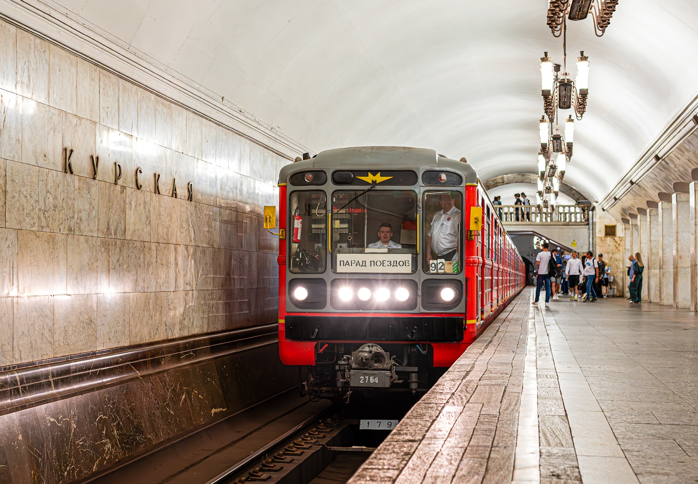
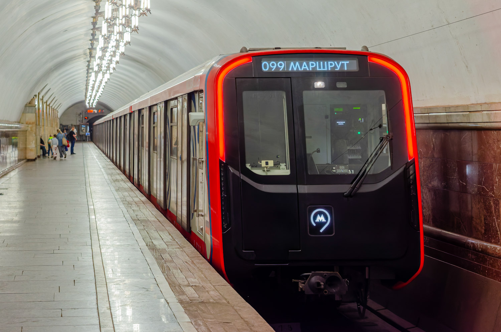

Парад поездов
Парад поездов — одна из главных традиций Московского метрополитена. Ежегодно в честь дня рождения метро и Дня города на Кольцевую или Большую кольцевую линию выходят составы разных эпох: от ретропоезда «Сокольники» до новейших «Москва-2026».
Пассажиры могут не только увидеть уникальные поезда, но и прокатиться в каждом из них — это уникальная возможность проследить эволюцию метрополитена за 90 лет.
Парад поездов 2026 — 91-летие метро
Парад прошёл 16 и 17 мая 2026 года на Кольцевой линии. В колонне — 9 составов, демонстрирующих эволюцию поездов метро.
🚆 «Номерной» / «Красная стрела»
Самая массовая серия поездов в мире. В 2026 году впервые участвовал именной поезд «Красная стрела».
Перейти(81-717) → Перейти(красная стрела) →🚇 81-717.6
Модификация «Номерного» с улучшенными характеристиками.
🚈 «Русич»
Первый состав современного поколения со сквозным проходом.
🍆 «Ока» (81-760А)
Версия со сквозным проходом, получившая прозвище «Баклажан» за расцветку.
Перейти →🚊 «Москва»
С этой модели началась новая эпоха поездов в столичном метро.
🚆 «Москва-2020»
Инновационный состав с улучшенным комфортом.
🚆 «Москва-2024»
Новейший поезд, курсирующий на Замоскворецкой линии.
🚆 «Москва-2026»
Первый раз на параде! Самая инновационная модель.
📅 Как проходил: Торжественное открытие — 16 мая в 09:00 на станции «Комсомольская». Прокатиться можно было с 09:00 до 20:00 в оба дня.
⭐ Интересный факт: «Москва-2026» — самая новая модель, которая впервые вышла на парад. Между самым старым («Сокольники») и самым новым составом — 90 лет разницы.
История парада поездов
Первый парад поездов
Парад впервые прошёл в честь 80-летия Московского метрополитена. На Кольцевую линию вышли 6 составов.
Ашка на параде
На параде проехалась Ашка (вагон типа А). В остальном — как в 2015, но с выставки убрали часть служебных вагонов.
Добавилась «Москва»
В параде впервые участвовала «Москва». В остальном отличий от 2016 года нет.
Улучшение «Номерного»
«Номерной» стал чуть лучше: один из вагонов имел диваны и старые поручни. На некоторые вагоны добавили наклейки, таблички в салоне убрали (внутри — история поезда, снаружи — парад поездов).
«Акварель» вместо «Русича»
Вместо «Русича» на парад вышел поезд-галерея «Акварель».
Возвращение «Яузы»
«Яузу» отремонтировали и добавили надпись «Яуза». Информации о параде 2020 года не найдено.
81-765.2 «Москва» впервые
Впервые на параде — 81-765.2 «Москва» (с Филёвской линии). Зелёный «Номерной» заменили на бренд-окрас «Московский транспорт». «Яузы» больше не было.
Парад на БКЛ
Ради пиара парад перенесли на Большую кольцевую линию. «Москва-2020» — тематическая «БКЛ. Сердце московского метро» в честь открытия БКЛ. В основном — как раньше.
«Москва-2024» и «Баклажан»
«Москва-2020» — обычная. «Москва-2024» — новый поезд. Вместо «Оки» — «Баклажан».
Возвращение на Кольцо
Парад вернули на Кольцевую линию. Убрали Еж3. Провели выставку на «Партизанской». На «Партизанской» снова можно войти в музейные вагоны
«Красная стрела» вместо бренд-номера
Вместо брендированного «Номерного» на парад вышла «Красная стрела».
Традиция: Парад поездов проводится с 2015 года и стал одним из самых узнаваемых городских транспортных событий столицы.
Как попасть на парад
📅 Когда
Обычно в мае (ко дню рождения метро — 15 мая) и в сентябре (ко Дню города).
🚇 Где
Кольцевая линия (5) или Большая кольцевая линия (11). В 2026 году — Кольцевая.
🎫 Билеты
Отдельные билеты не нужны — достаточно обычного проездного. Прокатиться можно в каждом составе.
⏰ Время
С 09:00 до 20:00 в выходные дни. Торжественное открытие — в 09:00 на «Комсомольской».
Фотогалерея

📸 Transport_moscow

📸 Mskrail
Нажмите на фото для увеличения
«Парад с каждым годом всё хуже. В начале поезда украшены, многие присутствуют. 2015 год — один из лучших. Хочется, чтобы хотя бы на юбилеи были исторические вагоны».